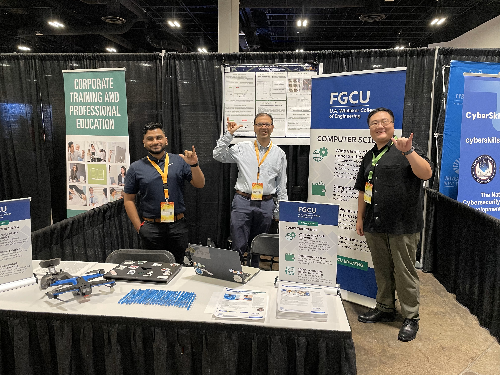
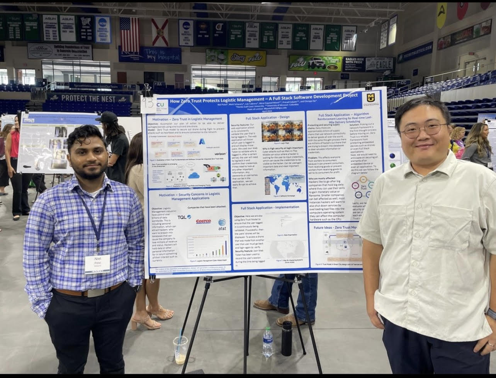

My Portfolio
| Project Name | Description |
|---|---|
| Zero Trust Project |
In this project, I led a team of over 16 students in my Computer Security class to develop an application with a database to track essential drone data. Collaborating with the University of Missouri, our goal was to innovate a system for drone-based package delivery. My role involved guiding the class to achieve this objective.
I proposed the development of a web application to store and manage crucial data for the drones. This included location coordinates (x and y), information on various drone types available for testing, and their respective capabilities such as speed, weight, and battery life. Additionally, the application featured a user-friendly map interface to check specific addresses or locations. |
| Cyber Security Club Website |
As the president of the newly established cybersecurity club at Florida Gulf Coast University (FGCU), my colleagues and I have developed a website to support and promote our club. FGCU is introducing a new concentration degree in cybersecurity, complementing its existing Bachelor of Software Engineering and Bachelor of Computer Science programs.
We built the website using the Next.js framework, leveraging TypeScript, Tailwind CSS, and JavaScript for development. |
Networking
It was an honor to represent Florida Gulf Coast University as my colleagues and I, along with several of my professors, traveled to Tampa, Florida, to showcase our new Bachelor of Computer Science degree at the 2024 Sunshine Cyber Con event.
I participated in the 2024 Florida Gulf Coast University Eaglex Research and Abstract Convention at Alico Arena in Fort Myers, Florida, where I had the opportunity to showcase my Zero Trust research project.
